主題三：ETL 實務案例分享
本主題分享多個高保真（High-Fidelity）的 ETL 與 OCR 整合實戰案例，引導同仁理解如何進行結構化資料轉置與自動化處理。
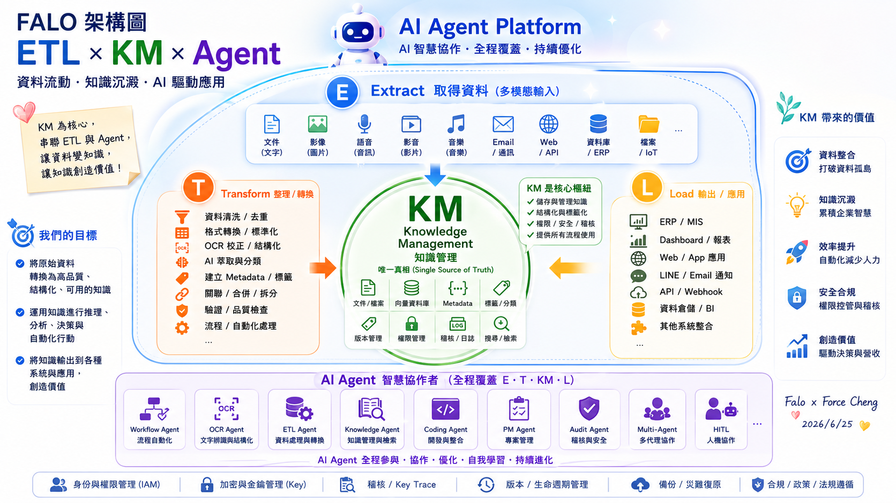
📥 E (Extract) - 取得資料
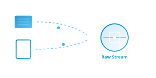
對應 FALO 架構的多模態輸入端。專注於從多元異質源頭（文件、影像、語音、影片、Email、Web API、ERP 資料庫）中萃取原始資訊。在 AI 時代，E 階段是「多模態感知的起點」，利用 OCR Agent 與 Vision 技術將非結構化實體/數位檔案進行初步採集，為後續處理提供豐富素材。
⚡ T (Transform) - 整理 / 轉換
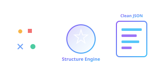
對應 FALO 架構的八大整理轉換管線。負責將採集到的混亂數據進行清洗去重、格式標準化、OCR 語意校正、AI 萃取分類與 Metadata 標籤建置。透過大模型語意理解與正則引擎，排除多餘空格與噪訊，將無序資料轉化為高度結構化、易於 AI 與資料庫索引的標準 JSON 格式。
📤 L (Load) - 輸出 / 應用
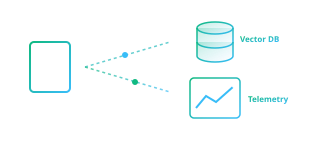
對應 FALO 架構的七大輸出應用。將清洗與結構化後的 Payload 資料，精準載入關聯式資料庫、向量資料庫、ERP 核心系統、戰情 Dashboard 看板或對接 API Webhook。這一步是數據轉化為決策價值的最後一公里，為企業級應用提供穩固的數據支撐。
🤖 Agent (AI Agent) - 智慧協作
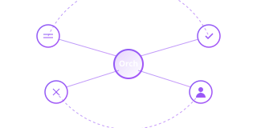
對應 FALO 架構的 AI Agent 智慧協作平台。在 E-T-L 的各個階段，由多個專門的自治 Agent（如 Workflow Agent 流程自動化、ETL Agent 資料處理、Audit Agent 合規稽核與 HITL 人機協作）共同協同。透過多 Agent 協作機制，自主執行決策，保障管道安全並實現業務流程的智慧運營。
---
🚀 核心實戰案例展示 (Featured Case Studies)
以下為 Class 04 重點示範專案，著重於將電腦視覺、OCR 辨識與企業工作流/智慧稽核整合運作的實際落地設計。
案例一：Video to PPT 智慧簡報影格萃取與知識庫
- 專案精神：捕捉專家經驗 ➔ 建立企業知識管理 (KM) 資料庫，且執行時完全不耗費任何 AI API Token（零運行成本）。
- 技術整合特點：
- 圖像變化偵測：OpenCV 平均絕對誤差 (MAE) 進行快速變動判定。
- 雜湊去重與過濾：64位元差值雜湊 (dHash) 漢明距離去重，輔以 Laplacian 邊緣變異數進行模糊與黑底畫面過濾。
- OCR 與智慧搜尋 (RAG)：擷取圖片後，串接 OCR (PaddleOCR/EasyOCR) 提取文字並進行向量嵌入 (Embedding)，讓簡報投影片內容可直接透過 LLM 進行語意問答與查詢。
- 示範影片：課堂播放最強完整版功能展示影片 `demo.mp4`。
- 學員基礎代碼：📥 下載學生基礎版代碼 (video_to_ppt_basic.zip) *(內含 Python 偵測腳本與 README 說明，供課堂練習使用)*。
案例二：AAA-Evidence Hub 企業電子憑證自動化處理平台
- 專案精神：針對中小企業與一人資訊部門 (OPC) 設計的 PoC，完整打通「憑證收集 ➔ 辨識 ➔ 轉換 ➔ 簽核 ➔ 模擬 ERP 入帳 ➔ 自動稽核」之閉環。
- 技術整合流程：
- 1. 辨識層 (OCR)：整合 Layout-free LLM Vision API / Google OCR / PaddleOCR 提取非結構化憑證欄位。
- 2. 轉換層 (ETL)：將憑證資料清洗並標準化為 Expense Record 格式。
- 3. 工作流 (Workflow)：以狀態機驅動自動送審、會計覆核與模擬過帳流程。
- 4. 智慧稽核 (AI Audit)：比對歷史資料進行重複核銷防弊、設定金額上限警示、以及透過語意理解驗證「週末公務乘車事由」之合規性。
- 互動展示：🌐 開啟線上互動展示頁 (ticket-demo)
案例三：iPAS 智慧刷題模擬器 (OCR + ETL 實戰)
- 專案精神：結合大模型視覺 (Gemini Vision API) 與高精度 OCR 技術，將紙本/圖片題庫進行即時結構化轉換、清洗與自動答題之完整 ETL 實踐。
- 技術整合特點：
- 1. 影像擷取與 OCR：通過前端模擬器擷取題目圖片，調用 Vision API 進行精準文字與排版特點提取。
- 2. 資料清洗 (ETL)：利用 Regex 與規則引擎對 OCR 斷字、多餘空格進行極致降噪與欄位校對，轉化為標準 JSON 格式。
- 3. 模擬器交互 (Swiper)：結合 Swiper.js 打造流暢的滑動刷題體驗，內建即時 Token 消耗與台幣花費 Telemetry 面板，落實企業級 AI 成本控制意識。
- 雙通道體驗入口：
- 🌐 開啟 iPAS 智慧刷題模擬器 (線上 force 網址) *(將於新視窗中開啟線上版模擬器)*
🚀 ETL 之 L (Load) 實踐：企業級 AI 雙軌戰情中心 (War Room) 與元件解構
在企業數據管線（Data Pipeline）的 ETL 閉環中，Load (L) 階段不僅僅是將清洗好的數據載入向量資料庫，更包含「如何將高價值的結構化數據呈現給決策者（Data Analytics）」以及「如何實時監控系統的健康度、安全防禦與用戶行為日誌（Operations Telemetry）」。
為了讓學員深刻理解下一代 ERP 生態圈的 AI 運維架構，我們將本課程的政府補助案 RAG 專案進行了延伸開發，設計了一套高質感的深色科技風格「企業級 AI 雙軌戰情中心」。這套系統分為兩個獨立的主大屏，分別對應資料剖析與用戶行為審計。
---
🖥️ 雙軌戰情中心大屏全景藍圖
學員可在宏觀大屏中體驗「密密麻麻」的高密度指揮中心布局。大屏整合了全局指標，有需要時可「點進去細看」下方物理拆解的各個元件。
1. 版本 A：原始資料戰情系統大屏 (Raw Data & Knowledge Analytics)
此系統專注於靜態原始資料的加載與多維度剖析。呈現 244 筆政府補助案的整體結構：
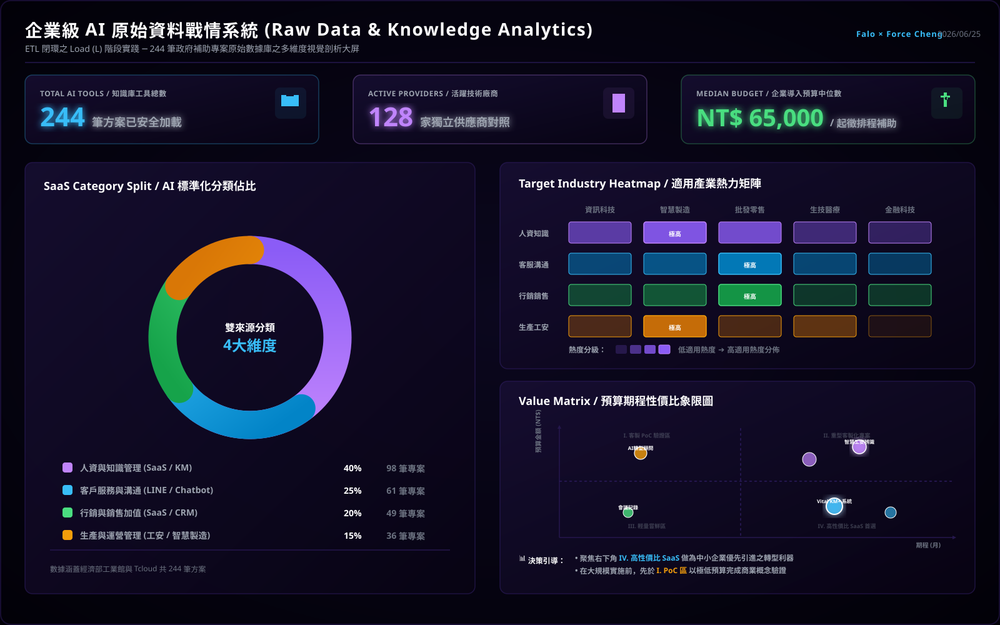
2. 版本 B：使用者行為與運維審計戰情系統大屏 (User Behavior & Operations Audit)
此系統專注於動態用戶行為、RAG 回答質量、實時 Token 成本與資安防禦監控：
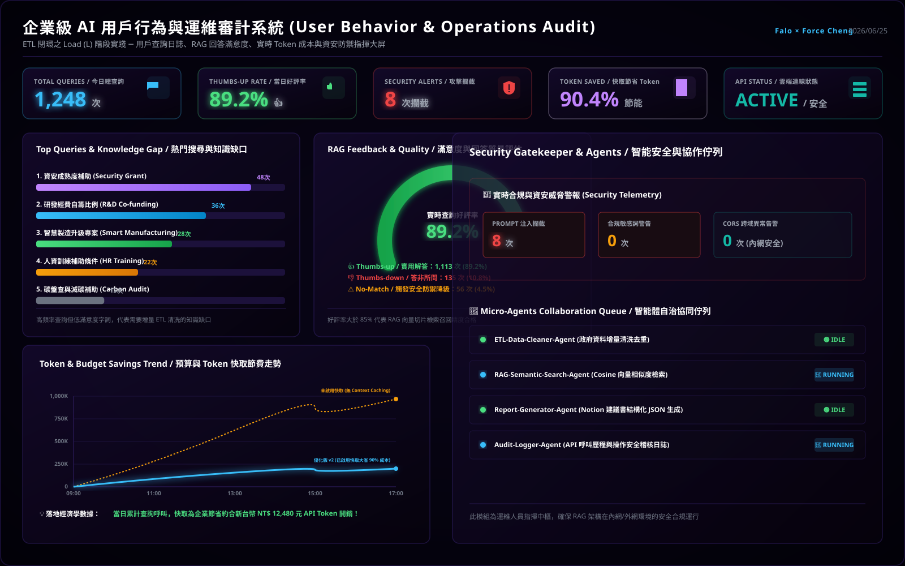
---
📂 雙軌戰情系統八大核心元件物理拆解與深度解構
為了讓學員理解在不同商業與工程場景下，如何選擇並設計最適的圖表類型，我們將上述兩大系統拆解為 八大核心儀表板元件，逐一進行視覺展示與深度技術解構：
📊 原始資料戰情系統 (版本 A) 元件解構
##### 元件 A1：大盤核心 KPI 指標面板 (Top Cards)
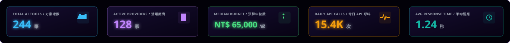
- 圖表類型：數值指標卡 (Metric Cards) ＋ 趨勢微線圖 (Sparklines)。
- 商業洞察：即時呈現「方案總數 244 筆」、「活躍廠商 128 家」、「導入預算中位數 NT$ 65,000」等核心大盤數據，並在下方搭配微幅波動的綠色微線圖，表徵數據的穩定載入狀態。這組指標能讓決策者秒級掌握系統負載與數據規模。
- 技術實現：在前端異步加載靜態 `unified_ai_tools_db.json` 資料庫（壓縮後僅約 150KB），在內存中通過高效的 JavaScript 數組處理（如 `Set`、`reduce`）動態計算指標，保證 0 延遲加載。
##### 元件 A2：AI 標準化分類佔比圓環圖 (Donut Chart)
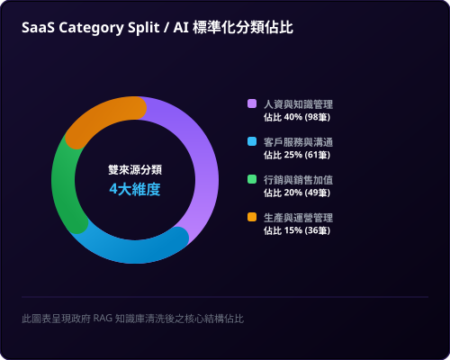
- 圖表類型：環狀比例圖 (Donut Chart) ＋ 結構百分比清單 (Legend Grid)。
- 商業洞察：揭示了補助案在四大 SaaS 領域的分佈。「人資與知識管理 (40%)」佔比最高，是目前政府補助的主力方向；其次為「客戶服務與溝通 (25%)」、「行銷與銷售加值 (20%)」及「生產與運營管理 (15%)」。這能引導企業將資源優先投入最易獲得政府補助的領域。
- 技術實現：採用 SVG 原生的 `stroke-dasharray` 與 `stroke-dashoffset` 動態圓環比例繪製，結合 CSS `transition` 提供極致流暢的加載動畫，完全避免了第三方圖表庫（如 Chart.js）帶來的打包體積膨脹。
##### 元件 A3：適用產業熱力矩陣 (Heatmap)
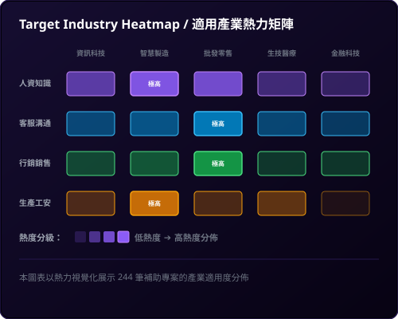
- 圖表類型：二維熱力矩陣 (2D Heatmap Matrix) ＋ 熱度分級標註 (Density Indicators)。
- 商業洞察：以熱力漸層色彩標註不同 AI 分類在「資訊、製造、零售、醫療、金融」五大產業的適用度。例如「製造業」在「人資知識」與「生產工安」中熱度極高，能幫助企業進行精準的 SaaS 定位。
- 技術實現：設計成全局過濾器。當使用者在前端點選矩陣中的特定格子時，會觸發雙向聯動，整個戰情中心的數據（包括圓環圖與象限圖）將立即根據該產業過濾並重新渲染。
##### 元件 A4：預算期程性價比象限散佈圖 (Quadrant Scatter Plot)
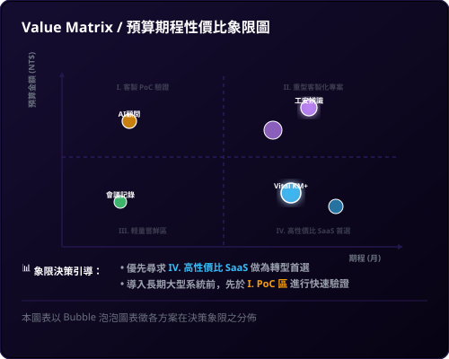
- 圖表類型：四象限 Bubble 散佈圖 (Quadrant Bubble Plot) ＋ 黃金分割十字臨界線 (Threshold Crosshair)。
- 商業洞察：以橫軸「期程 (月)」與縱軸「預算金額」劃分出四大決策象限，協助企業進行精準決策：
- I. 客製 PoC 服務：高預算、短週期，適合前期概念驗證。
- II. 重型專案系統：高預算、長週期，適用大型核心系統導入。
- III. 輕量嘗鮮區：低預算、短週期，適合小範圍敏捷試錯。
- IV. 高性價比 SaaS：低預算、長週期，是企業轉型、低成本高收益的首選（如 Vital KM+）。
- 技術實現：利用 SVG 散佈點（Scatter Plot）定位，氣泡大小與方案熱度掛鉤。透過黃金中位數（6個月期程與 6.5 萬元預算）作為十字交叉線，為企業自動篩選出最優轉型路徑。
---
👤 使用者行為與運維審計系統 (版本 B) 元件解構
##### 元件 B1：熱門搜尋詞與知識缺口橫條圖 (Horizontal Bar Chart)
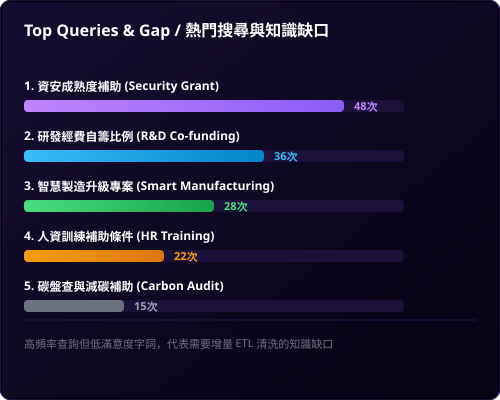
- 圖表類型：水平長條圖 (Horizontal Bar Chart) ＋ 排名標籤 (Rank Badges)。
- 商業洞察：列出 Top 5 查詢頻率最高的詞彙（例如「資安成熟度補助」、「自籌經費比例」等）。這代表企業內最迫切的「知識缺口 (Knowledge Gap)」，如果某些高頻問題的查詢好評率很低，則能直接指導企業下一次 ETL 增量清洗與載入的方向，形成「數據閉環」。
- 技術實現：在前端記錄用戶每次的 Search Query，非同步寫入運維審計日誌。數據加載模組定期以 MapReduce 方式在前端進行頻次聚合，並利用 SVG 的 `
` 元素渲染出高質感的漸層水平長條。
##### 元件 B2：RAG 回答滿意度與質量圓弧儀表 (Radial Gauge Chart)
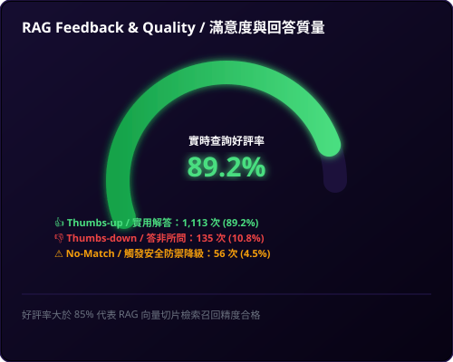
- 圖表類型：半放射狀圓弧儀表 (Radial Gauge) ＋ 好評率 KPI (Feedback KPI)。
- 商業洞察：呈現用戶按讚/按踩的好評率（89.2%），並展示 LLM 未匹配率 (4.5%)，讓運維人員一眼看出 AI 答得好不好。這直接反映了知識庫切片與 Embedding 檢索的精準度。
- 技術實現：前端 UI 提供 thumbs-up/down 的一鍵反饋按鈕。統計引擎異步統計好評率，並動態調用 SVG 的 `stroke-dashoffset` 將好評率即時轉化為綠色發光半圓弧進度條。
##### 元件 B3：Token 流量與快取節費折線走勢圖 (Real-time Line Chart)
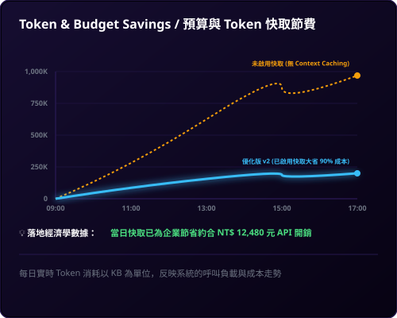
- 圖表類型：雙折線區域圖 (Dual-line Area Chart) ＋ 漸層填充 (Gradient Fill Area)。
- 商業洞察：一條陡峭上升的橙色虛線（未啟用快取的線性花費）對比一條極度平緩的藍色實線（啟用 Context Caching 後的快取花費），以極具衝擊力的折線圖直觀證明「快取大省 90% 成本」的經濟學威力，向決策同仁展示實實在在的「企業 AI 降本增效」。
- 技術實現：前端對話引擎在每次發起 API Request 前，會讀取並記錄本地 API 返還 of `usageMetadata`，並在前端繪製出一條包含 `linearGradient` 漸層填充的雙折線區域圖。
##### 元件 B4：資安 Gatekeeper 與多 Agent 自治佇列 (Security Alarm & Agent Queue)
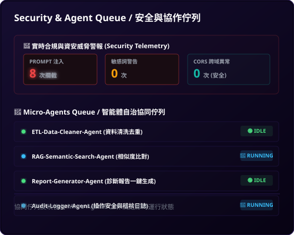
- 圖表類型：告警狀態面板 (Security Alarm Panels) ＋ 流水線狀態佇列 (Agent Pipeline Queue)。
- 商業洞察：上方以紅色警報燈監控當日 Prompt 注入攻擊攔截次數（8次）與違規敏感詞查詢，保障系統的生命線；下方監控 ETL-Agent、RAG-Agent、Report-Agent 等非同步協作佇列的執行狀態（ACTIVE/IDLE），讓運維人員精準掌握後台微服務的負載。
- 技術實現：資安防護模組（Gatekeeper）攔截惡意輸入並即時寫入告警計數器；微服務協調器（Orchestrator）在非同步工作流啟動與休眠時，通過 Webhook 將狀態即時推送到戰情中心佇列面板。
---
---
📂 實戰專案與手冊
本主題提供豐富的實戰手冊，引導您一步步動手實作上述的案例：
- 🔍 痛點與需求驗證手冊：學習如何掃描並定位真實業務痛點。
- 🚀 MVP & PoC 規劃指南：掌握最簡可行產品的架構設計與交付方法。
- 📋 50+ AI App 創意 Backlog：參考銀河 ERP 實際梳理出的需求池，加速靈感轉換。